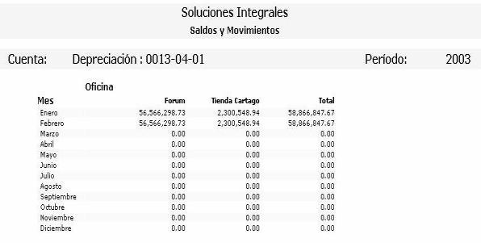

Genera la consulta de saldos y movimientos por cada cuenta contable por cada mes, seleccione la cuenta a consultar y haga click en el botón "Consultar".
Figura 1. Consulta de Saldos y movimientos.
Si no se selecciona ningún parámetro se generará el reporte con todos los datos existentes. Una vez generado el mismo se tiene la opción de abrir un archivo Microsoft Excel con los datos generados en el reporte.

Figura 2. Reporte de la consulta de saldos y movimientos.